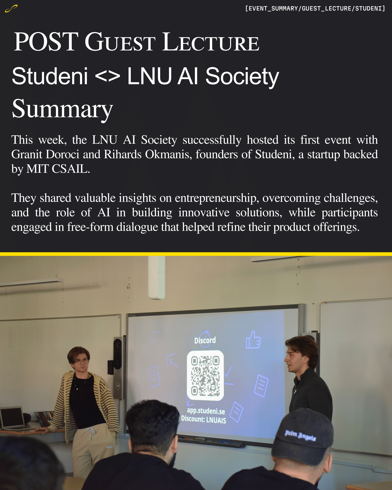

Discover the most recent updates from the world of AI and our society activities.
We were honored to welcome Granit Doroci (CEO) and Rihards Okmanis
(CPO), founders of Studeni, a startup backed by MIT CSAIL. They
shared their entrepreneurial journey and insights on leveraging AI
for innovation.
The session highlighted practical applications of AI in product
development, along with valuable lessons on resilience and
adaptability in building impactful solutions.
Special Offer: Studeni is offering our community free access to their platform for one month. Join their Discord for updates and internship opportunities!
Thank you to Granit and Rihards for their time, and to all participants who made our first event a success.
